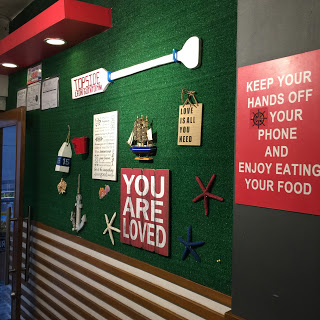
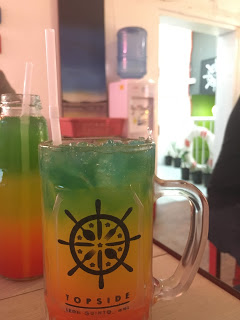
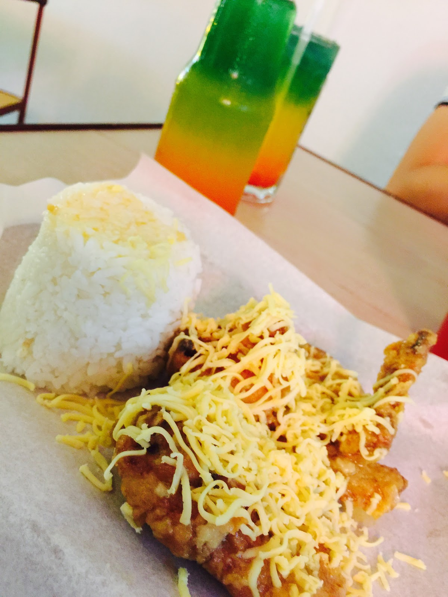

No, I won't ever cheat over you. It was my mandate to love you 'til the end.
Classes pretilly just resumed today. Long days of heavy rains and cold breeze have increased as the days of not bearing a hello from you.
The rush of school requirements continued to pour, everyone and literally everything is in a rush - people, deadlines, lectures.
And it was loooooooooooooong day today. Hence, I have invited my previous schoolmate to eat at Topside Diner in front of St. Scholastica's College Manila where my cousin recommends me to eat for she said that the food there is delicious and is just cheap to finish the day with a treat.
And for your information, Topside Diner is a two-floor yacht-themed dining place which serve chicken wings either spiced buffalo way, sweet chili, and last but not the least, their best-seller garlic and parmesan. They also serve fries in variants. Meals may come in solos and combos which include their colorful tropical drink.
 Various Decorations hung up on the wallsContrary to the Tori Box, they served better here and prices were somehow justifiable. Their menu were really student-friendly.
I and my friend ordered their famous chicken wings in garlic and parmesan and cheesy bacon fries, including their tropical drink.
 Topside's Colorful Tropical DrinkWhile waiting for the food to be served, I was mesmerized by the ambiance of the wonderful place. They have recycled bottles of wine to make light bulbs look more attractive. Paddles have been hung on their walls and various stuff and posters regarding boats like ships' steering wheel and anchors are ornamented at the surroundings.
I loved the way they serve their food on trays and boat-shaped plates. Another fun thing is that they provide plastic gloves instead of utensils which was cool for me since I enjoy to feast with my bare hands more.
The service took a some time, but it was definitely worth the wait Topside's Chicken Wings in Garlic and Parmesan
After such interval, chow time has been declared. The fries does not seem that tasty but in addition with the bacon and cheese, the fries became perfect and had savor. I wasn't able to taste the garlic and parmesan chicken and wings but my friend concluded that the wings taste juicy and perfectly comes with the butter. He said I should just tried that instead of cheesy bacon and fries because it would be much worth the pay than what I bought.
My experience in Topside Diner was nice. I enjoyed the ambiance and most especially their food. However, one thing I have been concerned is the slow serving time of food. I hope they would improve this too soon to get more patrons. I would definitely recommend the place to a friend for them to be able to taste greatness as well.